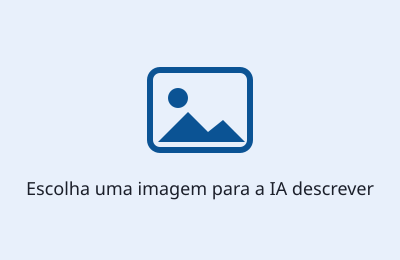

🎙️ Comandos de voz
Clique em Comando de voz (ou pressione Alt + V) e fale um dos comandos abaixo. Funciona no Chrome e no Edge.
Comando de voz desligado.
🖼️ Descrição de imagens com Inteligência Artificial
Envie uma foto. A rede neural MobileNet (TensorFlow.js) roda no seu próprio navegador, sem enviar a imagem para nenhum servidor, e descreve o que reconheceu. A descrição também é falada e confirmada por vibração.

O modelo de IA será carregado quando você pedir a primeira descrição.
📳 Feedback tátil (IoT)
Cada ação confirmada gera um padrão de vibração. No celular, usa o motor de vibração do aparelho. Com uma pulseira ESP32 conectada pela USB (Web Serial), o mesmo padrão é enviado ao motor de vibração da pulseira. Assim, pessoas surdas ou cegas recebem a confirmação sem depender da tela ou do som.
Pulseira não conectada. A vibração do celular está ativa.